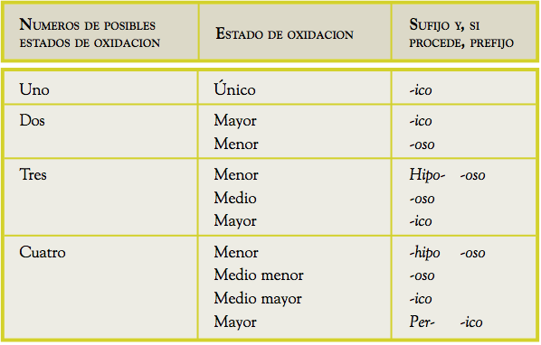
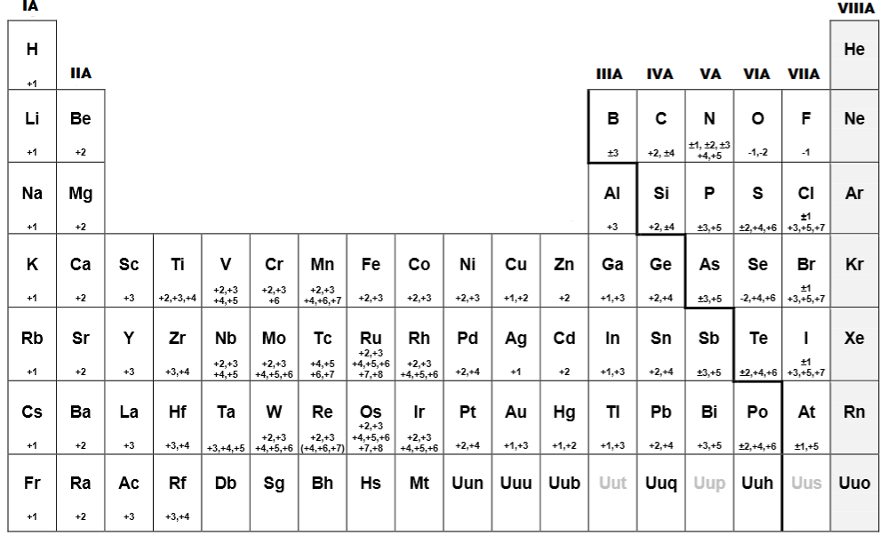

-
Prefijo y Sufijo
Nomenclatura IUPAC
Hecho Por:
Sara Hernandez
Gabriela Gutierrez
Julian Echeverri
-
Estado de oxidacion: UNICO
Los estados de oxidacion pueden variar, sin embargo si su Estado de oxidacion es unico osea que solo es uno, por lo tanto se utiliza el sufijo ICO.
Por Ejemplo
Rb
+1
Rubidico
Aqui podemos ver el elemento quimico del Rubidio(Rb), junto con su numero de oxidacion que en este caso es unico.
Por esto se llamaria RubidICO en vez de Rubidio
-
Estado de oxidacion: 2 MAYOR-MENOR
Si los valores de un numero de oxidacion son exactamente 2 se utilizan los sufijos ICO para el menor y OSO para el mayor.
Por Ejemplo
Pd
+2 +4
+2 = Paladico
+4 = Paldioso
En el caso del Paladio(Pd) tiene 2 numeros de oxidacion por lo que se aplicarian los sufijos de Menor-Mayor (ICO, OSO)
-
Estado de oxidacion: 3 MENOR-MEDIO-MAYOR
Un elemento quimico puede tener muchos numeros de oxidacion, en el caso de que sean 3, se aplican los sufijos: ICO para el menor, OSO para el medio y para el mayor se utiliza tanto prefijo como sufijo y seria: HIPO- -OSO
Por Ejemplo
C
+2 +4
-4 = Carbonico
+2 = Carbonoso
+4 = Hipocarbonoso
En el caso del Carbono(C) tiene tres numeros de oxidacion y por esto se aplicarian estos sufijos y prefijos.
Como puedes ver uno de los numeros de oxidacion tiene una linea abajo. Esto significa que ese numero hace un efecto de espejo.
En este caso si el +4 tiene la linea debajo, los numeros de oxidacion serian +4, -4 y +2
-
Estado de oxidacion: 4 o +
MENOR - MEDIO MENOR - MEDIO MAYOR - MAYOR
A partir de 4 o mas numeros de oxidacion se aplican los siguientes sufijos y prefijos:
Menor = ICO
Medio Menor = OSO
Medio Mayor = HIPO- -OSO
Mayor = PER- -ICO
Clorico(-1)
Cloroso(+1)
Perclorico(+3)
Hipocloroso(+5)
Hipocloroso(+7)
Si hay mas de dos numeros Mayores se utiliza el mismo prefijo y sufijo en los dos.
Cl
+1 +3 +5 +7
-

-
